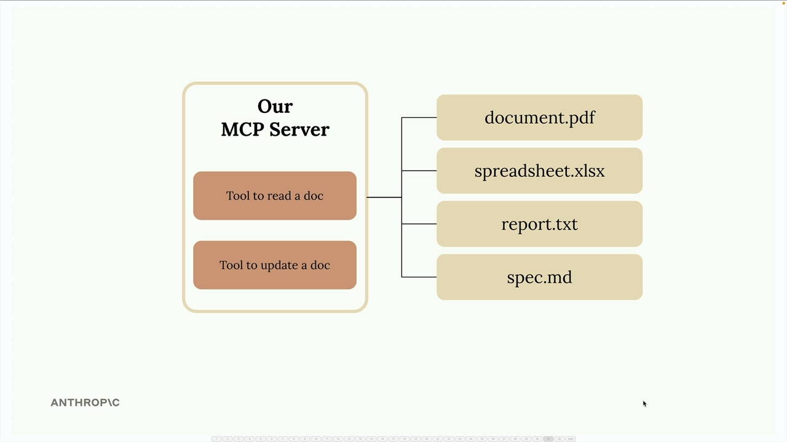

MCP로 도구 정의하기
공식 Python SDK를 사용하면 MCP 서버 구축이 훨씬 간단해집니다. 도구에 대한 복잡한 JSON 스키마를 직접 작성하는 대신, SDK가 데코레이터와 타입 힌트를 통해 그 복잡성을 모두 처리해 줍니다.
이 예제에서는 메모리에 저장된 문서를 관리하는 MCP 서버를 만듭니다. 서버는 두 가지 핵심 도구를 제공합니다. 하나는 문서 내용을 읽는 도구이고, 다른 하나는 찾기-바꾸기 작업으로 문서를 수정하는 도구입니다.
MCP 서버 설정하기
Python MCP SDK는 서버 생성을 매우 간단하게 만들어 줍니다. 단 한 줄로 완전한 MCP 서버를 초기화할 수 있습니다:
from mcp.server.fastmcp import FastMCP
mcp = FastMCP("DocumentMCP", log_level="ERROR")이 구현에서 문서는 키가 문서 ID이고 값이 문서 내용인 단순한 Python 딕셔너리에 저장됩니다:
docs = {
"deposition.md": "This deposition covers the testimony of Angela Smith, P.E.",
"report.pdf": "The report details the state of a 20m condenser tower.",
"financials.docx": "These financials outline the project's budget and expenditure",
"outlook.pdf": "This document presents the projected future performance of the",
"plan.md": "The plan outlines the steps for the project's implementation.",
"spec.txt": "These specifications define the technical requirements for the equipment"
}데코레이터를 활용한 도구 정의

SDK는 도구 생성 과정을 장황한 절차에서 간결하고 읽기 쉬운 방식으로 바꿔 줍니다. 긴 JSON 스키마를 작성하는 대신, Python 데코레이터와 타입 힌트를 사용합니다.
문서 읽기 도구 만들기
첫 번째 도구는 Claude가 ID로 모든 문서를 읽을 수 있게 해 줍니다. 전체 구현 코드는 다음과 같습니다:
@mcp.tool(
name="read_doc_contents",
description="Read the contents of a document and return it as a string."
)
def read_document(
doc_id: str = Field(description="Id of the document to read")
):
if doc_id not in docs:
raise ValueError(f"Doc with id {doc_id} not found")
return docs[doc_id]
@mcp.tool 데코레이터는 Claude에 필요한 JSON 스키마를 자동으로 생성합니다. Pydantic의 Field 클래스는 각 인수가 무엇을 기대하는지 Claude가 이해할 수 있도록 매개변수 설명을 제공합니다.
문서 편집 도구 만들기
두 번째 도구는 문서에서 간단한 찾기-바꾸기 작업을 수행합니다:
@mcp.tool(
name="edit_document",
description="Edit a document by replacing a string in the documents content with a new string."
)
def edit_document(
doc_id: str = Field(description="Id of the document that will be edited"),
old_str: str = Field(description="The text to replace. Must match exactly, including whitespace."),
new_str: str = Field(description="The new text to insert in place of the old text.")
):
if doc_id not in docs:
raise ValueError(f"Doc with id {doc_id} not found")
docs[doc_id] = docs[doc_id].replace(old_str, new_str)
이 도구는 세 가지 매개변수를 받습니다: 문서 ID, 찾을 텍스트, 대체 텍스트. 구현은 단순성을 위해 Python의 내장 문자열 replace() 메서드를 사용합니다.
오류 처리
두 도구 모두 Claude가 존재하지 않는 문서를 요청하는 경우를 처리하기 위한 기본 오류 처리를 포함합니다. 유효하지 않은 문서 ID가 제공되면, 도구는 Claude가 이해하고 적절히 대응할 수 있는 설명적인 메시지와 함께 ValueError를 발생시킵니다.
SDK 방식의 주요 이점
- Python 타입 힌트에서 자동 JSON 스키마 생성
- 유지 관리가 용이한 깔끔하고 읽기 쉬운 코드
- Pydantic을 통한 내장 매개변수 유효성 검사
- 수동 스키마 작성에 비해 줄어든 보일러플레이트
- 개발을 위한 타입 안전성 및 IDE 지원
MCP Python SDK는 도구 정의 작성이라는 복잡했던 과정을 Python 개발자에게 자연스럽게 느껴지는 방식으로 바꿔 줍니다. 비즈니스 로직에 집중하는 동안 SDK가 프로토콜 세부 사항을 처리합니다.